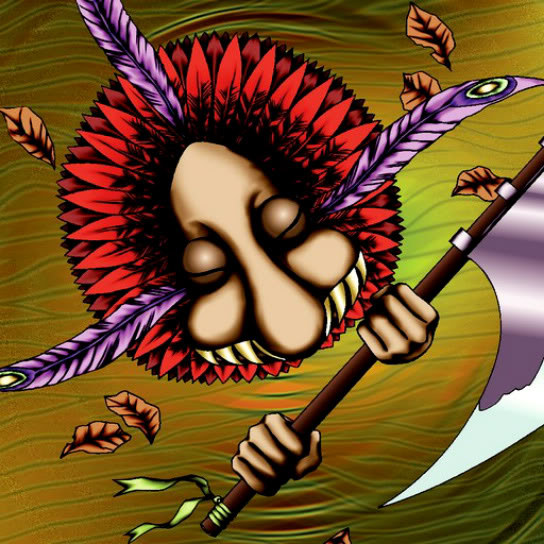

Hane-Hane

Description: "When this card is flipped face-up, return to own deck and re-shuffle the deck."
STATS
ATK: 450
DEF: 500DECK COST
Deck Cost per Card: 15EFFECT NOT IMPLEMENTED
Fusion List (13 Possible Fusions)
- Hane-Hane + Barrel Lily = Flower Wolf
- Hane-Hane + Bat = Dice Armadillo
- Hane-Hane + Dancing Elf = Nekogal #2
- Hane-Hane + Enchanting Mermaid = Nekogal #2
- Hane-Hane + Harpie Lady = Garvas
- Hane-Hane + LaMoon = Nekogal #2
- Hane-Hane + Living Vase = Flower Wolf
- Hane-Hane + Mechanical Snail = Dice Armadillo
- Hane-Hane + Mechanical Spider = Dice Armadillo
- Hane-Hane + Monsturtle = Turtle Tiger
- Hane-Hane + Princess of Tsurugi = Nekogal #2
- Hane-Hane + Rainbow Flower = Flower Wolf
- Hane-Hane + Witch's Apprentice = Nekogal #2